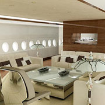

De Airbus A380 is het grootste passagiersvliegtuig ter wereld. Het is een product van het Europese concern Airbus. Het widebody-vliegtuig beschikt over twee verdiepingen, waardoor het maximaal 853 passagiers kan herbergen.




De Airbus A380 is het grootste passagiersvliegtuig ter wereld. Het is een product van het Europese concern Airbus. Het widebody-vliegtuig beschikt over twee verdiepingen, waardoor het maximaal 853 passagiers kan herbergen.
© Airbus A380